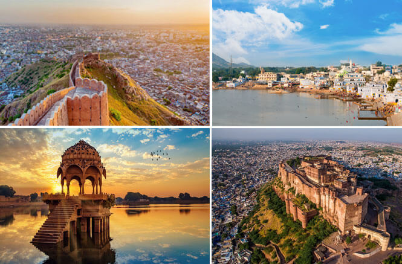

Interesting facts about Rajasthan
- Almost every city in Rajasthan is colour coordinated. Jaipur is pink, Udaipur is white, Jodhpur is blue and Jhalawar is purple!
- We assume that Rajasthan is all about sand. But that’s not true. In some parts, you won’t be able to spot a single speck of a
desert. There are dense green pastures in the middle of nowhere.
- The terrain and the sky change their colours swiftly as if a painter is rushing to complete a majestic multi-hued painting.
- The mystic Saraswati River, one of the main ancient rivers revered by the Hindus, is believed to have disappeared under the
sands of the Thar Desert, due to the emergence of the Aravali range of mountains.
- The Aravalis are the oldest mountain range in India, even older than the Himalayas.